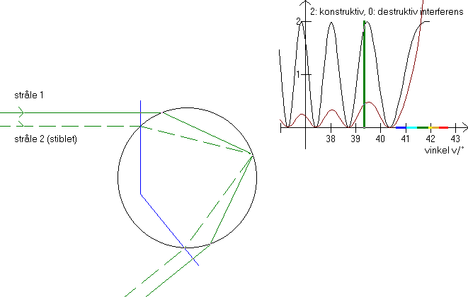

Se først interferens i tynd film, så forstår du nemmere dette billede!
Interferens kan ses ofte ved den primære regnbue og meget sjældent ved den sekundære regnbue. (Se interferensens på opstartsbilledet!) Vi vil derfor kun betragte den primære regnbue. På grafen for Alexanders bånd kan man se, at en stråle, der er spredt en vinkel mellem 15° og 42°, kan hidrøre fra to forskellige stråler. Tegn f.eks. en vandret streg ved 25° og aflæs parametrene på 1.aksen.

På dette skærmbillede kan du med scrollbaren i panelet til venstre flytte den ene stråle (den øverste) op og ned. Programmet beregner så parameteren for den anden stråle (stiplet), som spredes samme vinkel. Derefter tegnes begge stråler. Bemærk, at strålerne er parallelle, både før de rammer dråben og efter spredningen i dråben. Dernæst beregner programmet vejlængden for de to stråler (mellem de vinkelrette blå streger) og også antallet af bølgelængder på de to strækninger. Vær opmærksom på, at lysets bølgelængde i dråben er l' = l/n, hvor l er lysets bølgelængde i vakuum, og n er vandets brydningsindeks. Nu har vi antallet af bølgelængder for de to stråler og kan afgøre, om de interfererer konstruktivt eller destruktivt eller et eller andet derimellem.
Den lille graf øverst til højre viser interferensen for vinklerne i området 36° til den maksimale vinkel. Kør nu op og ned med strålerne, aflæs vejforskellen i tabellen og se på grafen ved den grønne streg, om der er konstruktiv interferens (markeret med samme fase) eller destruktiv interferens (markeret med modfase på grafen).
Interferensens afhænger af de to strålers intensitet. Bemærk, at stråle 2 (den stiplede) flytter sig mere end stråle 1. Til gengæld er der mere lys tilbage i stråle 1. (se tallene i tabellen og jf. afsnittet Polarisation). Derfor udslukker de to stråler hinanden, når de er i modfase. Ved tryk på F6 tegnes grafen for det vinkelrette polariserede lys, hvor der er taget hensyn til korrektionerne og til at der bliver mindre lys, jo længere man fjerner sig fra regnbuen (jævnfør »Regnbuens farver«).
I en regnbue varierer diameteren fra ca. 0,01 mm til nogle få mm. Interferensmønstret ses bedst under regnbuens »top«, idet interferensmønstret udtværes hvis ikke dråberne er lige store. Bemærk også, at solens diameter er 0,53°, dvs. interferensmønstret også udtværes, hvis afstanden mellem toppene er mindre end 0,53°.
Skift farve med trackbaren nederst til venstre og se interferensmønstret for de forskellige farver.
Skrift diameter på dråben med trackbaren øverst til venstre. Hvorledes ændres interferensmønstret, når diameteren bliver dobbelt så stor?
I tabellen nederst udregnes forholdet mellem lysstyrken af de to stråler.
Hvordan afhænger dette forhold af vinklen v?
Hvad fortæller det om interferensen, at forholdet er tæt på 1?